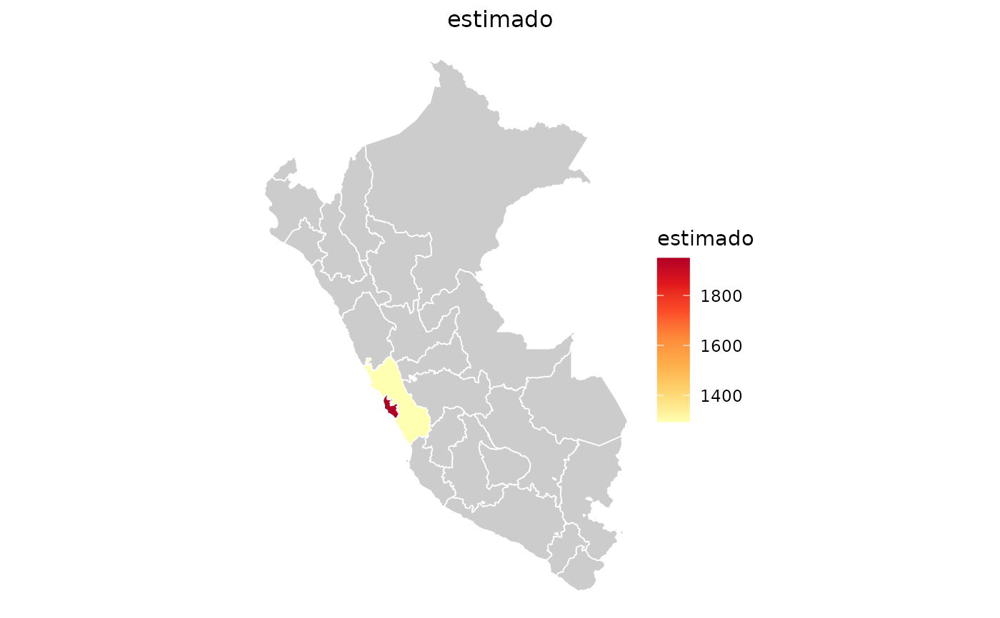

Une una tabla con una fila por ambito departamental de la Encuesta
Permanente de Empleo Nacional (EPEN) a los poligonos incluidos en el paquete
y devuelve un mapa interactivo (leaflet) o estatico (ggplot2). La funcion
recibe resultados ya agregados; no calcula indicadores.
Usage
mapa(
data,
var,
nivel = "departamento",
tipo = c("leaflet", "ggplot"),
titulo = NULL,
paleta = "YlOrRd",
shapes = NULL
)Arguments
- data
data.framecon una fila por ambito departamental EPEN. Para resultados deindicadores(), usapor = c("region_code", "division_lima").- var
Nombre de la columna numerica que se representara con colores.
- nivel
Nivel geografico. Solo se admite
"departamento"; los niveles"provincia"y"distrito"producen un error informativo.- tipo
Tipo de visualizacion:
"leaflet"(por defecto, interactivo) o"ggplot"(estatico).- titulo
Titulo del mapa y de la leyenda. Si es
NULL, usavar.- paleta
Paleta de colores de
leafletoggplot2.- shapes
Objeto
sfopcional congeo_id,departamentoy una geometria por ambito EPEN. Si esNULL, se construyen los poligonos oficiales a partir de shapes_departamentos y shapes_provincias.
Details
Ambitos de la EPEN. El INEI no publica los resultados de Lima como un
unico departamento. Distingue DIVISION_LIMA = 1, Lima Metropolitana y la
Provincia Constitucional del Callao, de DIVISION_LIMA = 2, Region Lima
(las otras nueve provincias del departamento). Por ello, cuando CCDD o
region_code vale 15, mapa() exige tambien DIVISION_LIMA o
division_lima. Nunca asigna ese valor solo al poligono de Lima.
Los otros 23 departamentos conservan su ambito habitual. En total, el mapa contiene 25 ambitos departamentales EPEN. Los poligonos de los dos ambitos de Lima se construyen a partir de los poligonos provinciales incluidos en el paquete.
Llave de union. La funcion admite:
CCDDoregion_code, masDIVISION_LIMAodivision_limapara el codigo 15; oun nombre oficial en
ambito_epen,departamento,DEPARTAMENTO,deporegion.
Si hay varias columnas geograficas, todas las que tengan un valor deben coincidir. Los codigos invalidos y las contradicciones producen un error. Los nombres no reconocidos se informan y no se dibujan.
Nivel geografico. Esta version no admite provincias ni distritos. Un mapa representa los valores que recibe, pero no demuestra representatividad ni significancia estadistica. Revisa el diseno muestral, el numero de observaciones y la precision antes de comparar territorios.
Examples
ingreso_dep <- indicadores(
muestra_epen_2024,
"ingreso_promedio",
por = c("region_code", "division_lima")
)
#> Warning: 81 filas eliminadas por peso NA o cero.
mapa(ingreso_dep, "estimado", tipo = "ggplot")
#> Warning: 23 ambitos sin dato para 'estimado': "AMAZONAS", "ANCASH", "APURIMAC",
#> "AREQUIPA", "AYACUCHO", "CAJAMARCA", "CUSCO", "HUANCAVELICA", "HUANUCO", "ICA",
#> "JUNIN", "LA LIBERTAD", "LAMBAYEQUE", "LORETO", "MADRE DE DIOS", "MOQUEGUA",
#> "PASCO", "PIURA", …, "TUMBES", and "UCAYALI".
